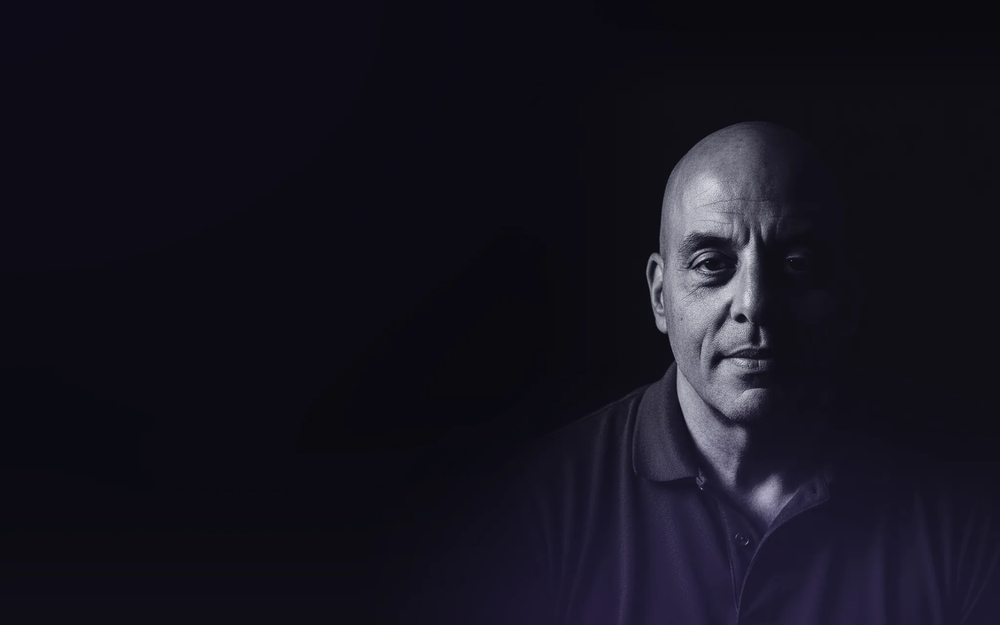

Pode ser uma tarefa que volta toda semana. Pode ser uma decisão travada. Ou uma coisa que você desconfia que tem um jeito mais fácil de fazer.
Me conta o que está acontecendo. Se você já tiver alguma coisa pronta, manda junto.
Quase ninguém chega aqui sabendo pedir. Chega sabendo que alguma coisa não anda.
Chega o mesmo arquivo, você faz a mesma conferência, do mesmo jeito. Já sabe quanto tempo vai levar e já se conformou. Faz assim há tanto tempo que ninguém mais pergunta se precisa ser assim.
Tem informação demais e parte dela se contradiz. Falta tempo de separar o que é fato do que só parece fato. Enquanto isso a decisão fica esperando, e o prazo não espera.
Você já pensou nisso mais de uma vez. Já até começou a procurar como resolver e parou no meio. Descobrir o caminho custa um tempo que você não tem hoje, e do jeito atual a coisa ainda sai. Então volta pro fim da lista. De novo.
Eu começo pelo que já existe. Leio o que você me mandou, entendo como aquilo funciona hoje e separo o que é fato do que está sendo repetido sem ninguém ter conferido.
Só depois eu escolho a ferramenta. Às vezes é inteligência artificial. Às vezes é uma planilha simples. A escolha vem do problema, nunca antes dele.
E se o caminho que você imaginou não se sustentar, eu falo. Mesmo sendo o contrário do que você esperava ouvir.
Do jeito que estiver. Planilha bagunçada, arquivo que não abre, print, áudio. Não precisa organizar antes. Organizar antes já é parte do problema.
Uma conversa, um áudio, o que for mais fácil pra você. É aqui que aparece o que não estava no arquivo.
Você não precisa gerenciar o meu trabalho nem entrar em reunião pra saber como está indo. Quando aparecer uma decisão que só você pode tomar, eu levo até você com a minha recomendação junto. Fora isso, eu volto quando tiver alguma coisa pra você olhar.
Não é relatório pra ficar bonito na gaveta. É a coisa em si, no formato que serve pro seu caso.
Já mexi com perfil de LinkedIn parado desde 2020, com planilha de custo de operação, com apostila de treinamento de equipe, com campanha de anúncio e com conteúdo de TikTok. Nenhum desses assuntos parece com o outro.
O que eles têm em comum é o começo. Em todos, a pessoa me entregou o material dela e a primeira coisa que eu fiz foi ler e dizer o que estava ali de verdade. Quase sempre era diferente do que ela achava que estava.
Depois disso o caminho aparece. Às vezes o que falta é cortar, às vezes é escrever do zero. Teve caso em que a resposta foi montar uma planilha e teve caso em que foi tirar a planilha do caminho.
A IA entra aqui. Com ela eu consigo analisar muito mais informação em muito menos tempo, e por isso o assunto deixou de ser barreira. Quem decide o que fica continua sendo eu.
Não tem case de cliente publicado aqui. A maior parte do que eu faço mexe com material interno de empresa e de pessoa, e eu não publico isso sem autorização escrita. O que dá pra conferir por fora está abaixo.
Uma operação de conserto de bikes montada do zero nos Estados Unidos.
Conheço o Caetano desde 1983, quando trabalhamos juntos no Maksoud Plaza. Já ali ficava claro o que o define até hoje: dedicação total à operação, sangue-frio sob pressão e um cuidado raro com a execução, do detalhe ao todo. Quatro décadas depois, vejo a mesma pessoa aplicando isso em logística e carga aérea, agora entre Brasil e EUA.
Conheci o Caetano em 2023, quando eu já trabalhava na Air Canada Cargo, em MIA. Desde então, acompanhei de perto seu trabalho exemplar e seu compromisso constante com a excelência operacional. Sua contribuição vai continuar fazendo diferença em qualquer operação de que ele participe.

Comecei a trabalhar aos 15 anos, em hotel. Saí do Maksoud Plaza como gerente de recepção e fui para a United Airlines em Guarulhos, em 92, quando a empresa começou a operar no Brasil.
Na Continental eu montei a operação de cargas do zero, assumi São Paulo e Rio e abri estações. Quando começou a aliança entre Continental e Copa, fui eu quem colocou a Copa para voar no Brasil. O primeiro voo São Paulo Panamá foi projeto meu. A operação saiu do zero e chegou a dez milhões de dólares em oito anos.
Depois comprei uma loja em São Paulo que estava no vermelho e levei quinze anos para virar. Em 2020 vim para os Estados Unidos e montei uma empresa do zero na Flórida. Em 2023 voltei para a aviação, no hub de carga de Miami.
São oito operações, em dois países e em quatro setores. Todas do zero ou quebradas quando eu cheguei.
O setor de carga aérea já começou outra mudança com o ONE Record. Estou me certificando pela IATA agora, porque quero acompanhar essa mudança preparado, não começar a aprender depois.
É com esse olhar que eu leio o material que você me manda.
Pode mandar do jeito que estiver. Um áudio, um print, uma planilha, um link ou só a explicação.
Eu leio, faço as perguntas que faltarem e digo com clareza se consigo ajudar.